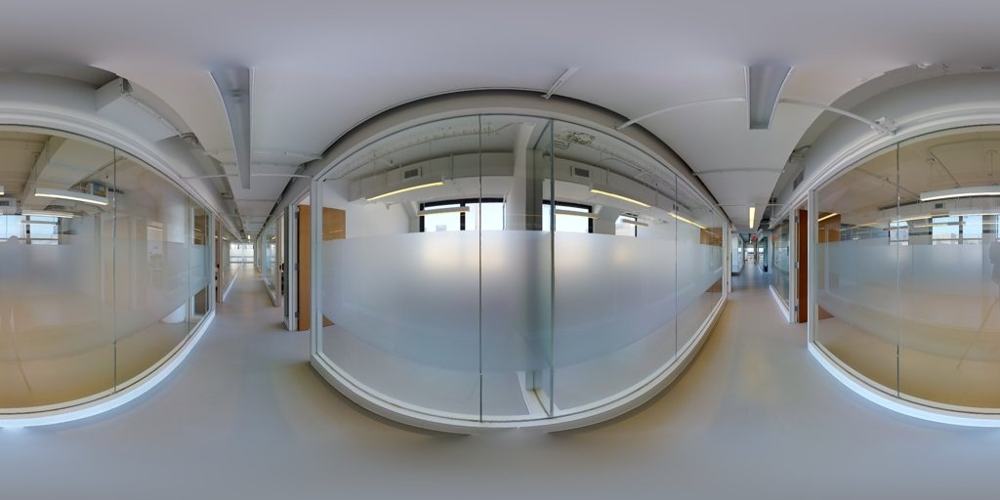
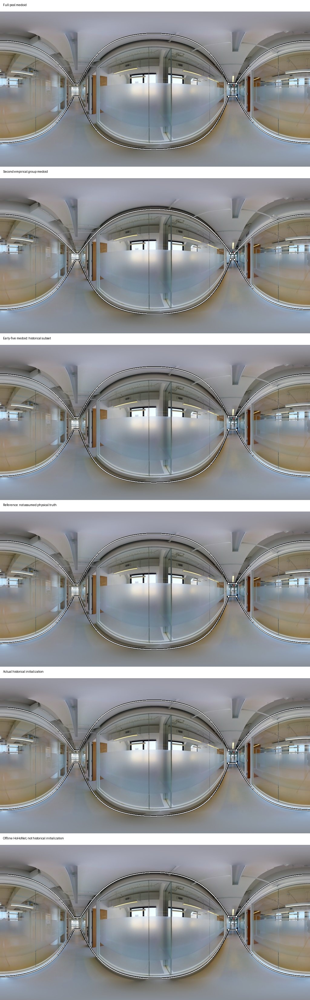

C01 高分歧、稳定代表与前5人低估
B6ByNegPMKs_75327de9719945aa8b893a6404667884
P1 / semi · N=26 · D=0.262410
走道两侧及中部为玻璃隔断，磨砂部分遮住另一侧的下部结构；远处走道与近处墙体转折同时可见。
需区分真实玻璃围护、门洞和透过玻璃看到的相邻空间；不得因透明就继续扩展。
本题是corner_drift合成trap初始化，不是自然模型随机出错；本例抽取的前5份在线性墙面带度量下与初始化相同，但不据此推断注意力或盲从。
实际初始化、early5和剩余几何的差别；统计模式不自动是合理多解。

查看实际标注、参考及候选叠图

版本、身份和数值证据
{
"case_id": "C01",
"image": "B6ByNegPMKs_75327de9719945aa8b893a6404667884",
"stage": "P1",
"condition": "semi",
"title": "高分歧、稳定代表与前5人低估",
"visible_evidence": "走道两侧及中部为玻璃隔断，磨砂部分遮住另一侧的下部结构；远处走道与近处墙体转折同时可见。",
"closure_question": "需区分真实玻璃围护、门洞和透过玻璃看到的相邻空间；不得因透明就继续扩展。",
"interpretation_warning": "本题是corner_drift合成trap初始化，不是自然模型随机出错；本例抽取的前5份在线性墙面带度量下与初始化相同，但不据此推断注意力或盲从。",
"human_adjudication": "pending",
"human_questions": "实际初始化、early5和剩余几何的差别；统计模式不自动是合理多解。",
"image_url": "https://label-images-1389474327.cos.ap-guangzhou.myqcloud.com/data/mp3d_layout/img_v/B6ByNegPMKs_75327de9719945aa8b893a6404667884.jpg",
"image_sha256": "064b5b61bedbaa3f0d190f0f41377722024b89223b065066860e973a4528250c",
"prior_human30_overlap": false,
"N": 26,
"pairwise_D": 0.2624100706122407,
"late_medoid_step_mean": 0.00034703962721209996,
"bilayout_head_gap": 0.0,
"reference_file_sha256": "1b2a2d905f62d703a3e46a7a83e5dca6e90c6030988d6ca594d2eb69793b5cf6",
"actual_initialization": {
"initialization_source_kind": "trap_synthetic_disjoint_source",
"trap_family_set_json": "[\"corner_drift\"]",
"source_path": "analysis_results/reviewer_profile_dual_stage_processing_20260819_v2/SEMI_ROW_LEVEL_REVIEWER_EVIDENCE.csv",
"source_sha256": "e6489d41bcafec0455114eace5044418de9ea3ed34295104f9cdb5ecf540ab22",
"early5_initialization_distances": [
0.0,
0.0,
0.0,
0.0,
0.0
]
},
"selected_raw_records": [
{
"canonical_annotation_id": "b17159a624da813a",
"worker_id": 6,
"raw_annotation_id": 3288,
"raw_export_path": "analysis_results/prescreen_closeout_final_gold_v2_20260701/raw_inputs/project-29-at-2026-06-30-09-00-e7ea6931.json",
"raw_export_sha256": "63b34e8adce3790c76f41f1e77302ea926dfdcbb0bc2950f6258a8d90d8ccdd1",
"corners": 4.0,
"reference_distance": 4.623529139791138e-05
},
{
"canonical_annotation_id": "5429d9e5ae4acde8",
"worker_id": 28,
"raw_annotation_id": 3940,
"raw_export_path": "analysis_results/prescreen_closeout_final_gold_v2_20260701/raw_inputs/project-40-at-2026-06-28-05-14-bb74a057.json",
"raw_export_sha256": "1ce8a32e5708aa87c11f4e9957efebccd183b60e6d12066ceee69ce87d763305",
"corners": 4.0,
"reference_distance": 0.46509154799334196
},
{
"canonical_annotation_id": "b17159a624da813a",
"worker_id": 6,
"raw_annotation_id": 3288,
"raw_export_path": "analysis_results/prescreen_closeout_final_gold_v2_20260701/raw_inputs/project-29-at-2026-06-30-09-00-e7ea6931.json",
"raw_export_sha256": "63b34e8adce3790c76f41f1e77302ea926dfdcbb0bc2950f6258a8d90d8ccdd1",
"corners": 4.0,
"reference_distance": 4.623529139791138e-05
}
],
"early_failure_example": {
"context": "P1|0|semi|B6ByNegPMKs_75327de9719945aa8b893a6404667884",
"image": "B6ByNegPMKs_75327de9719945aa8b893a6404667884",
"building": "B6ByNegPMKs",
"stage": "P1",
"condition": "semi",
"N": 26,
"k": 5,
"replicate": 151,
"early_workers": "6;17;18;10;27",
"remaining_workers": "31;26;34;35;30;36;37;12;32;19;33;8;1;21;15;11;28;13;2;29;14",
"early_indices": "2;10;11;4;15",
"remaining_indices": "19;14;22;23;18;24;25;6;20;12;21;3;0;13;9;5;16;7;1;17;8",
"early_D": 0.0,
"corner_mean": 4.0,
"corner_sd": 0.0,
"corner_pair_disagreement": 0.0,
"bilayout_gap": 0.0,
"hoho_enclosed_gap": 0.137596242859,
"hoho_extended_gap": 0.137596242859,
"target": 0.301171079606,
"late_second_mode_supported": true,
"late_mode_unseen": true,
"model": "early_plus_corners_models",
"prediction": 0.0479327537379,
"baseline": 0.0624694047244,
"underestimate": 0.253238325869,
"squared_error": 0.0641296496887,
"absolute_error": 0.253238325869,
"baseline_sqerror": 0.0569784895915,
"early_low_train_cutoff": 0.0541682517067,
"late_high_train_cutoff": 0.147077870389,
"false_reassurance": true
},
"metric": "periodic_linear_wall_band_1_minus_IoU_1024x512; display curves use repository panostretch projection, while numerical distances retain the linear proxy",
"human_hoho_distance_mean": 0.17601349166301003,
"hoho_reference_distance": 0.012723521320495146,
"later_count_different_group": null
}